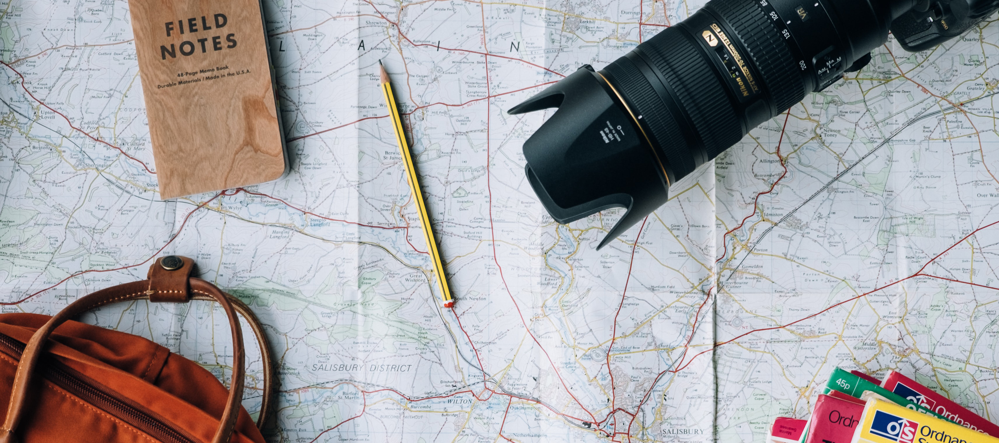
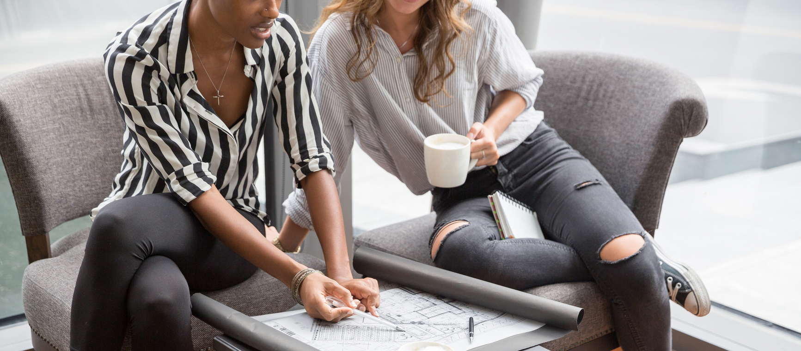
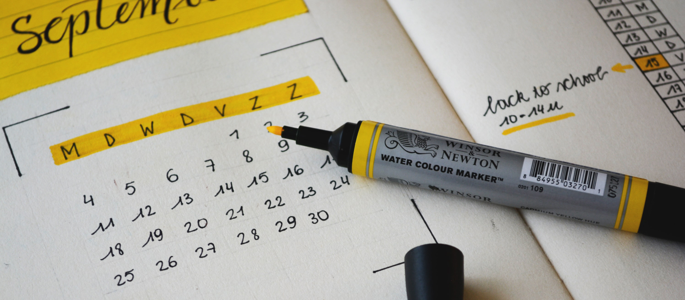
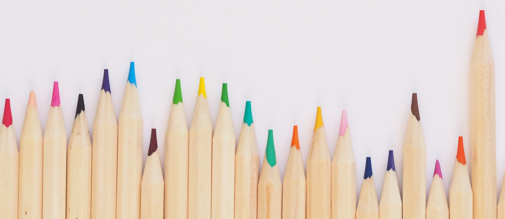
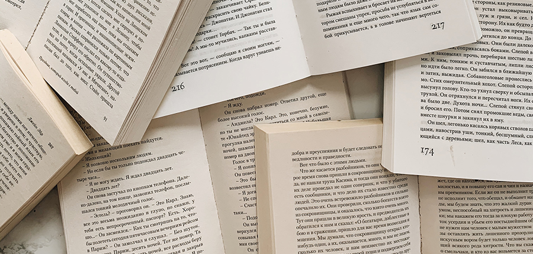
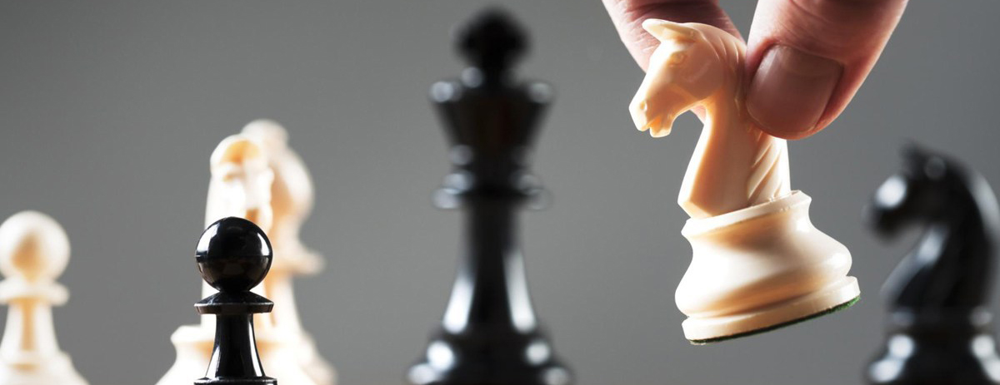

If you were going on vacation with friends, what would you want your role to be for the trip?

NEXT
1 / 8
I like to make decisions and be in charge
I like discovering unique detours and planning new adventures.
I like reading reviews of businesses and travel blogs to find the best information to make decisions.
I'd get people going, wouldn't waste time, and would make sure we're having the best possible experience on our trip.
I'd plan and organize everything: itinerary, travel plans, and accommodations. I always make sure everything runs smoothly.
I'd check in with each person to make sure they're happy and gather the group to make sure everyone is enjoying themselves.
What role would you like to take with relationships at work?

PREV
NEXT
2 / 8
I love relationships and collaboration. They are my favorite part about going to work.
I'd like to be the one directing things, either as an expert (alone) or as a manager (with a team).
I might not admit this to other people, but I like to be recognized for my achievements among a group of people. I strive to be the best I can be.
I prefer to work on creative projects - sometimes that's alone and sometimes with other people.
I like to be able to ask a lot of questions, do research, and understand more about the process or systems.
I like to be the one organizing things, creating schedules, and planning.
What role would you like to take when organizing & planning at work?

PREV
NEXT
3 / 8
I'd like to organize creatively based on color coding or making things look aesthetically pleasing.
I'd like to organize creatively based on color coding or making things look aesthetically pleasing.
I'd like to be in charge of how things are organized and direct the project planning.
I'd like to get things done quickly and love the feeling of achievement when I can see tangible results.
I'd like to create to-do lists and plan a timeline so that projects are organized.
I'd like to work with people and collaborate as a group.
How would you like to work with data, research, and reports?
PREV
NEXT
4 / 8
I'd love it! I could research and analyze information all day and be happy.
I'd like it as long as it's creative. I enjoy design with information for colorful charts and graphs or creatively researching ideas.
Collaborating with other people to gather information would be most enjoyable. I don't want to be stuck working on a computer alone.
I'd like to make decisions and move forward with a project – not get caught up in too much analyzing.
I'd like to be in charge so I can make sure the research fits with the big picture.
Planning and organizing would be my favorite part of research projects or reporting.
What role would you like to take on a creative project?

PREV
NEXT
5 / 8
I'd enjoy working collaboratively with other people to brainstorm ideas.
Creativity is my jam! I'd love to be a part of all aspects of creative projects.
I'd like to plan a timeline, organize the different parts of the project, and make sure that projects get finished within the deadline.
I'd like the more analytical role on the project: looking at the budget or research data.
I'd like to lead - even if I'm not the one creating, I like to see the big picture and be in charge.
I'd like the more analytical role on the project: looking at the budget or research data.
How detail-oriented do you like to be?

PREV
NEXT
6 / 8
I'm more interested in moving forward and making things happen than getting caught up in the details.
I like to pay attention to creative details, but other types of details can be boring.
Details are important. I'm good at catching mistakes, errors, typos, and incorrect information.
I like planning out the important details for things to run smoothly. Small, insignificant details don't matter as much.
I'm better with the big picture and would like to delegate the details.
I'd want to make sure I'm working with other people to sort out details through conversation.
What role would you like to play when working with leaders?
PREV
NEXT
7 / 8
I'd like to think of creative ideas that leadership can implement.
I'd like to ask lots of questions, research, and analyze data to understand processes so leadership can make better informed decisions.
I'd like to be a part of the big picture decisions of leadership.
I'd like to plan the timeline for projects and plan the step-by-step process.
I'd like to help move things forward quickly and be a part of some big achievements.
I'd like to work collaboratively with people on my level rather than leadership.
What is your secret career desire?
PREV
SUBMIT
8 / 8
I'd like to feel like I'm making a difference in people's lives and collaborate more with at team.
I'd like to be more creative and imaginative.
I'd like to be in charge of decision-making and leadership.
I'd like to get more accomplished, celebrate achievements, and be recognized for my work.
I'd like to have more time to read, analyze, and research information.
I'd like to keep everything in order - create systems, processes, and organized timelines.
Discover your profile makeup

RESTART QUIZ
HOME
profile
Leader:
20%
About
Idea-Person:
20%
About
Researcher:
20%
About
Motivator:
20%
About
Organizer:
20%
About
Camp-Counselor:
20%
About